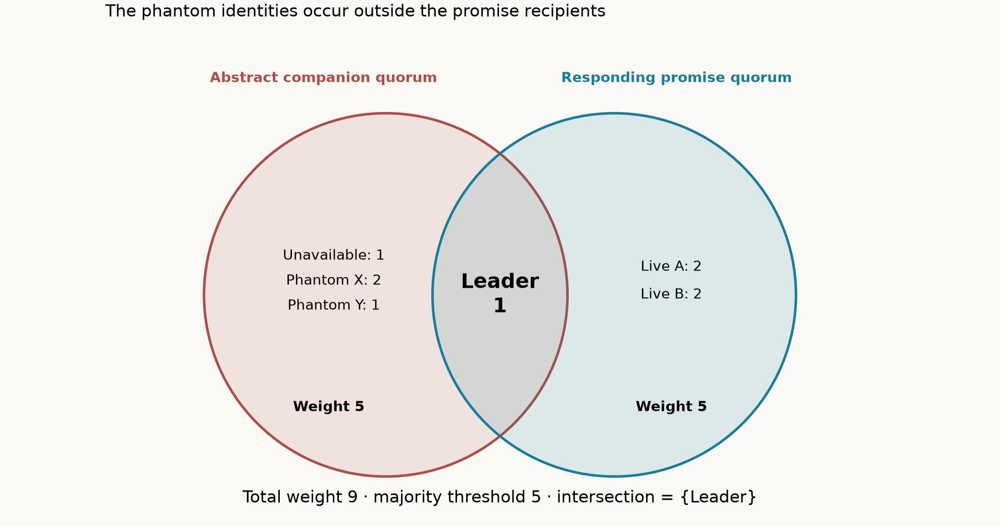
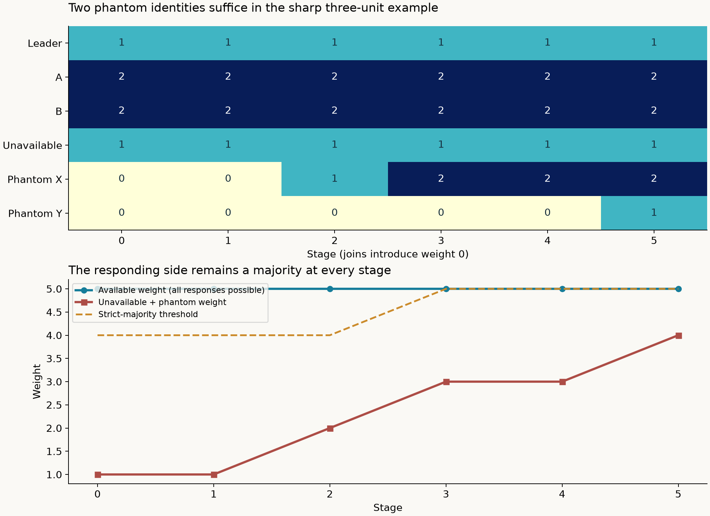
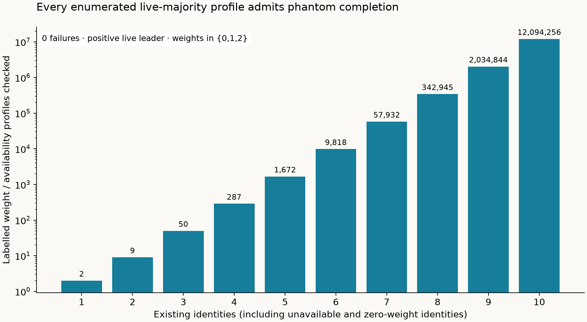
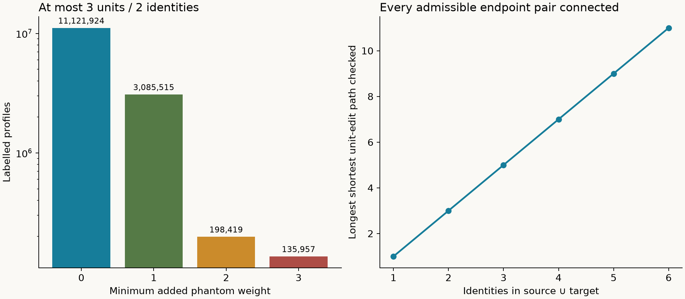

REPRODUCIBLE MATHEMATICAL EVIDENCE
Each added identity has weight 0, 1 or 2. Choosing a minimum-weight responding quorum improves the construction to at most three phantom units, on at most two phantom identities. The bound is sharp for a fixed leader of weight 1.


Final promise quorum: Leader, A, B. Abstract companion: Leader, Unavailable, Phantom X, Phantom Y. Intersection: Leader. Phantom identities receive no counted promise requests.
| stage | operation | Leader | A | B | Unavailable | Phantom X | Phantom Y | total | majority | available weight | unavailable weight | margin | responding quorum |
|---|---|---|---|---|---|---|---|---|---|---|---|---|---|
| 0 | initial | 1 | 2 | 2 | 1 | 0 | 0 | 6 | 4 | 5 | 1 | 4 | Leader, A, B |
| 1 | join phantom n4 | 1 | 2 | 2 | 1 | 0 | 0 | 6 | 4 | 5 | 1 | 4 | Leader, A, B |
| 2 | increment phantom n4 | 1 | 2 | 2 | 1 | 1 | 0 | 7 | 4 | 5 | 2 | 3 | Leader, A, B |
| 3 | increment phantom n4 | 1 | 2 | 2 | 1 | 2 | 0 | 8 | 5 | 5 | 3 | 2 | Leader, A, B |
| 4 | join phantom n5 | 1 | 2 | 2 | 1 | 2 | 0 | 8 | 5 | 5 | 3 | 2 | Leader, A, B |
| 5 | increment phantom n5 | 1 | 2 | 2 | 1 | 2 | 1 | 9 | 5 | 5 | 4 | 1 | Leader, A, B |
Keep a stable set of responding identities and a positive live leader. Both endpoints must have a live strict weighted majority. Use the union of their identities, giving absent identities weight zero. First decrease unavailable weights and increase live weights towards the target. Then decrease live weights and increase unavailable weights to the target. Every row has a responding majority, every edge changes one weight by one, and every adjacent pair of majority families intersects.
The number of unit edits is exactly Σ |sourceᵢ − targetᵢ|, the shortest possible among single-unit-edit paths. A join at zero or leave at zero changes identity membership without changing quorum arithmetic. Doubling and integral halving preserve quorum families.

14,541,815 labelled profiles, represented by all availability counts and all labelled weight vectors through 10 existing identities: zero failures. Leader identity is fixed at index zero; arbitrary leader names follow by renaming. All finite sizes are covered by the mathematical proof, rather than extrapolated from this chart.
| identities | representative profiles | labelled profiles | failures | maximum phantom weight | maximum hub path |
|---|---|---|---|---|---|
| 1 | 2 | 2 | 0 | 0 | 1 |
| 2 | 9 | 9 | 0 | 2 | 3 |
| 3 | 36 | 50 | 0 | 2 | 5 |
| 4 | 135 | 287 | 0 | 3 | 7 |
| 5 | 486 | 1672 | 0 | 3 | 9 |
| 6 | 1701 | 9818 | 0 | 3 | 11 |
| 7 | 5832 | 57932 | 0 | 3 | 13 |
| 8 | 19683 | 342945 | 0 | 3 | 15 |
| 9 | 65610 | 2034844 | 0 | 3 | 17 |
| 10 | 216513 | 12094256 | 0 | 3 | 19 |

3,939,756 ordered labelled endpoint pairs through 6 identities: zero failures, every constructed path shortest in unit edits.
| identities | ordered representative pairs | ordered labelled pairs | maximum path | failures |
|---|---|---|---|---|
| 1 | 4 | 4 | 1 | 0 |
| 2 | 45 | 45 | 3 | 0 |
| 3 | 536 | 732 | 5 | 0 |
| 4 | 6071 | 12331 | 7 | 0 |
| 5 | 66188 | 212824 | 9 | 0 |
| 6 | 701315 | 3713820 | 11 | 0 |
The phantom theorem constructs an abstract companion quorum and a fully responding promise quorum. The reachability theorem supplies a responding majority at every committed configuration. Neither theorem counts an unavailable identity as an acknowledgement or asserts that both disjoint arms simultaneously execute network rounds. That additional operational statement has different premises. A failed test of one fixed pivot or table is not a proof that no safe reconfiguration path exists.
Tests include negative controls for a missing live majority, an unsafe two-vote jump, excessive phantom padding, and substituting an abstract witness for actual received votes. Integer double/halve quorum equivalence is exhaustively checked separately.
Run python check.py --render from the parent directory. See the mathematical proof, definitions and source comparison, and machine-readable results. Source context: Turner’s LaTeX. The general completion and reachability constructions here are stated and checked independently.